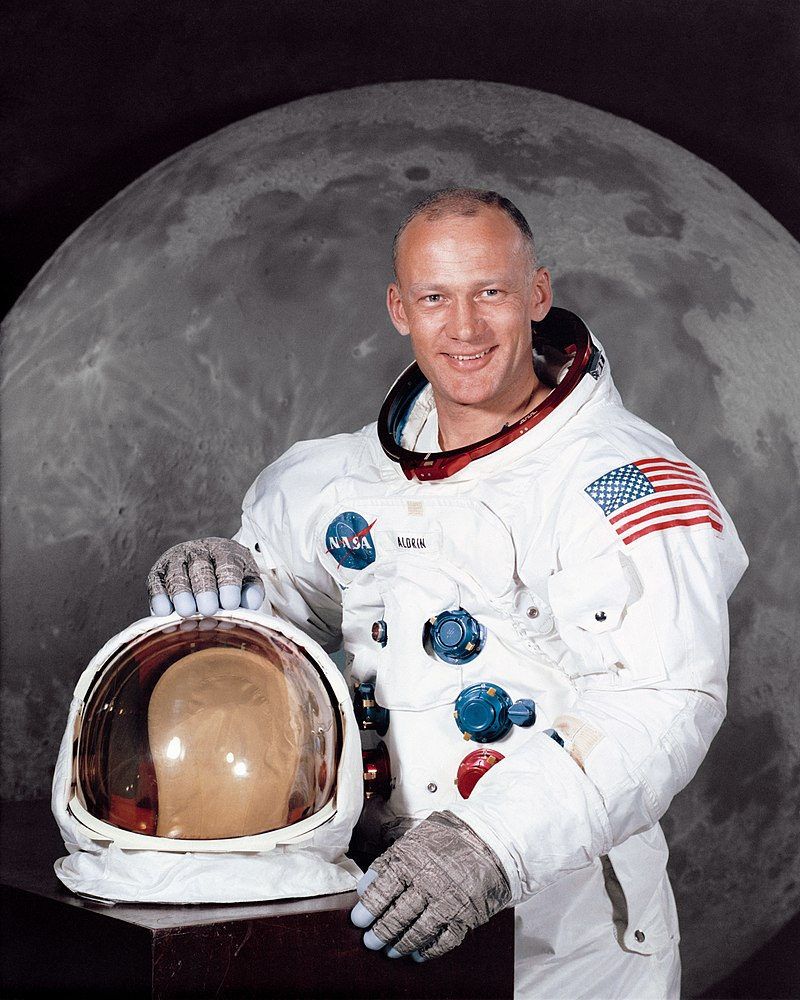
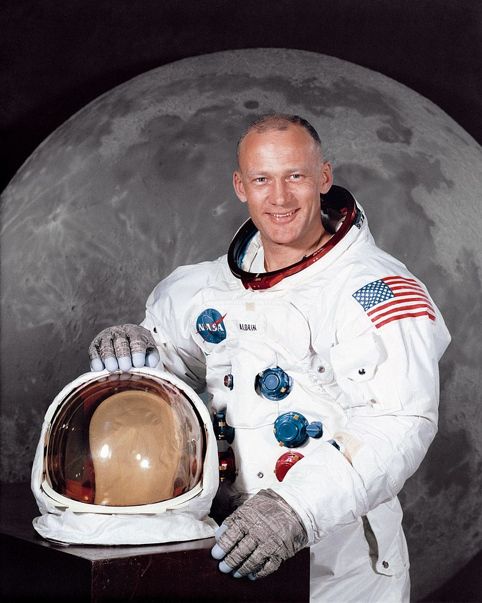

About Us
As we got further and further away, it [the Earth] diminished in size. Finally it shrank to the size of a marble, the most beautiful you can imagine. That beautiful, warm, living object looked so fragile, so delicate, that if you touched it with a finger it would fall apart. Seeing this has to change a man.
 


Our Astronauts
Never in all their history have men been able truly to conceive of the world as one: a single sphere, a globe, having the qualities of a globe, a round earth in which all the directions eventually meet.
Which there is no center because every point, or none, is center — an equal earth which all men occupy as equals. The airman's earth, if free men make it.
The ISS
The space station travels through space at 17,500 miles per hour at an altitude of about 220 miles. The ISS orbits the Earth about once every 90 minutes. During the orbit of the Earth we are in daylight for about 45 minutes and darkness for about 45 minutes.
That means the sun will rise and set 16 times a day. You can see the space station from where you live at certain times.